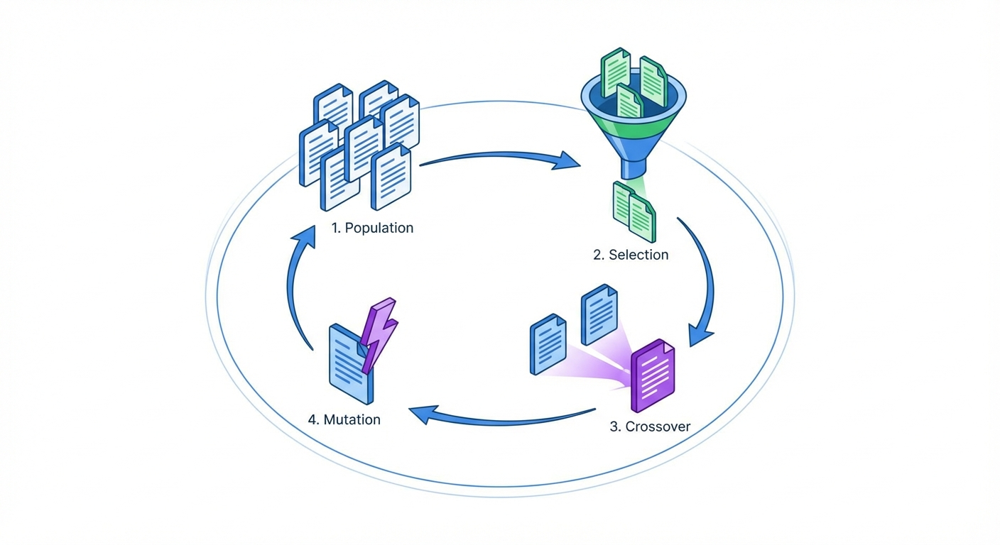
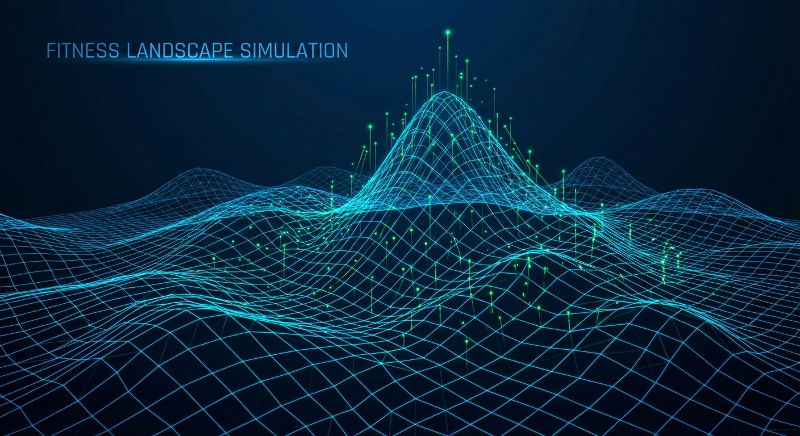

How It Works
The Genetic Optimization Task treats text generation as an evolutionary process. Instead of asking an AI to "fix" a document once, it creates a population of variants, evaluates them against specific criteria, and breeds the best performers to create superior offspring over multiple generations.

Mutation
Applies strategies like rephrase, simplify, elaborate, and restructure to introduce diversity into the text population.
Crossover
Combines the strongest traits of two high-performing parent texts to create a child variant that inherits the best of both worlds.
Evaluation
Each variant is scored (0-100) against weighted criteria (e.g., Clarity 40%, Impact 60%). Only the fittest survive to the next generation.
Configuration Parameters
Customize the evolutionary process using the GeneticOptimizationTaskExecutionConfigData object.
| Parameter | Type | Default | Description |
|---|---|---|---|
initial_text Required |
List<String> | - | The seed text(s) to begin evolution. Multiple seeds create a diverse initial population. |
optimization_goal Required |
String | - | The specific objective (e.g., "Make it persuasive and concise"). |
num_generations |
Int | 5 | How many evolutionary cycles to run. |
population_size |
Int | 6 | Number of variants to generate per generation. |
selection_size |
Int | 2 | Number of top performers to keep for the next generation. |
mutation_strategies |
List<String> | ["rephrase", "simplify", "elaborate"] | Allowed strategies for mutation. |
evaluation_weights |
Map<String, Double> | Clarity, Conciseness, Impact | Custom criteria weights (must sum to 1.0). |
Evolution Simulator
Visualize how the algorithm optimizes text over time. (Simulation Mode)

Common Use Cases
Prompt Engineering
Refine system prompts for LLMs. Evolve instructions until the model produces the exact desired output format and tone.
Marketing Copy
Generate high-impact headlines and ad copy. Optimize for specific emotional triggers or brand voice constraints.
Technical Documentation
Take a rough developer brain-dump and evolve it into clear, concise, and user-friendly documentation.
Email Campaigns
Perfect subject lines and body text to maximize open rates and click-through rates based on persuasive psychology.